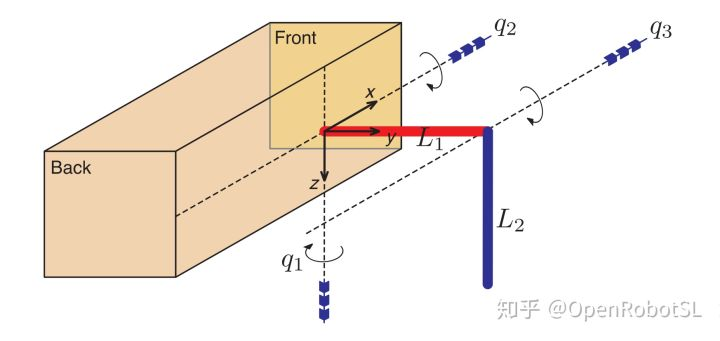
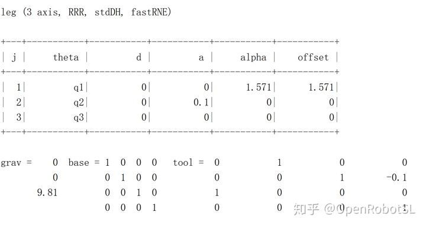
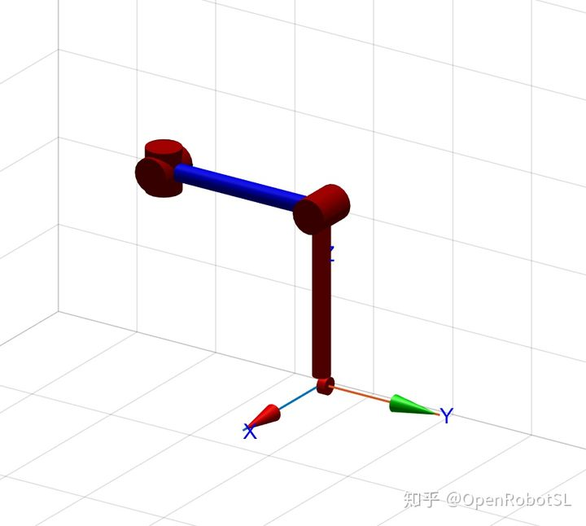
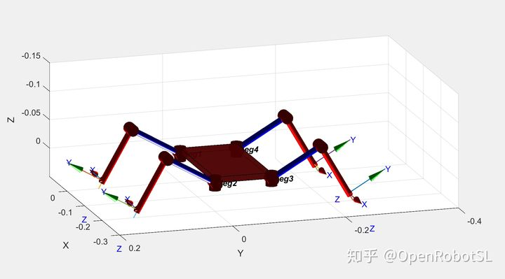

Home
本文转载自： https://zhuanlan.zhihu.com/p/290641155
本文转载自： https://zhuanlan.zhihu.com/p/312004092
首先！不建议用matlab做足式机器人仿真。。。学点理论还是可以的。。
我们的目标是制造一个四条腿行走的机器人。我们从创建一个三轴机器人开始
我们用胳膊作为腿，为这条腿规划一条适合行走的轨迹，还有
然后实例化这条腿的四个实例来创建行走机器人。
在运动学上，机器人腿很像机器人手臂。 对于这种应用，三个关节串联机械手是足够的，因为脚与地面有点接触，方向不重要。 确定Denavit-Hartenberg参数，即使是这样一个简单的机器人，也是一个涉及的过程，零角偏移需要在一个单独的步骤中确定。 第一关节将是髋关节运动，向前和向后，这是围绕z轴或Rz(Q1)旋转)。 第二个关节是髋关节上下运动，这是围绕x轴，Rx(Q2)旋转)。 这些构成球形髋关节，因为旋转轴相交。 膝盖由L1在y方向或Ty(L1)翻译)。 第三个关节是膝关节运动，朝向和远离身体，这是Rx(Q3)。 脚由L2在z方向或Tz(L2)翻译)。 因此，该机器人从臀部到脚趾的变换序列是Rz(Q1)Rx(Q2)Ty(L1)Rx(Q3)Tz(L2)。

下面式命令
>> s = 'Rz(q1) Rx(q2) Ty(L1) Rx(q3) Tz(L2)';
>> dh = DHFactor(s)
DH(q1+90, 0, 0, 90).DH(q2, 0, L1, 0).DH(q3-90, 0, -L2, 0)
.Rz(+90).Rx(-90).Rz(-90)
>> dh.tool
ans =
trotz(pi/2)* trotx(-pi/2)*trotz(-pi/2)
>> dh.command('leg')
ans =
SerialLink([0, 0, 0, pi/2, 0; 0, 0, L1, 0, 0; 0, 0, -L2, 0, 0; ],
'name', 'leg', 'base', eye(4,4),
'tool', trotz(pi/2)*trotx(-pi/2)*trotz(-pi/2),
'offset', [pi/2 0 -pi/2 ])
>> L1 = 0.1; L2 = 0.1;
>> leg = eval( dh.command('leg') ) 建模完毕

%对于零关节角度，脚处于
>> transl( leg.fkine([0,0,0]) )
ans =
0 0.1000 0.1000
%画出零位机器人
>> leg.plot([0,0,0], 'nobase', 'noshadow', 'notiles')
>> set(gca, 'Zdir', 'reverse'); view(137,48);
四条腿开始
clear all
%leg length
L1=0.1;L2=0.1;
%form a leg
leg=SerialLink([0, 0, 0, pi/2; 0, 0, L1, 0; 0, 0, -L2, 0 ],...
'name', 'leg', 'base', eye(4,4),'tool', ...
trotz(pi/2)*trotx(-pi/2)*trotz(-pi/2),'offset', [pi/2 0 -pi/2]);
% %diplay the leg
%leg.plot([0 0 0],'nobase','noshadow');
% set(gca,'Zdir','reverse');view(137,48);
%body wide and length
W = 0.1; L = 0.2;
%form a body
legs(1) = SerialLink(leg, 'name', 'leg1');
legs(2) = SerialLink(leg, 'name', 'leg2', 'base', transl(-L, 0, 0));
legs(3) = SerialLink(leg, 'name', 'leg3', 'base', transl(-L, -W, 0)*trotz(pi));
legs(4) = SerialLink(leg, 'name', 'leg4', 'base', transl(0, -W, 0)*trotz(pi));
% create a fixed size axis for the robot, and set z positive downward
clf;
axis([-0.3 0.1 -0.4 0.2 -0.15 0.05]); set(gca,'Zdir', 'reverse')
hold on
for i=1:4
hold on
legs(i).plot([0 -pi/6 0],'nobase','noshadow');
end
%画身体立方体
plotcube([0.2 0.1 -0.01],[ -0.2 -0.1 0],.8,[1 0 0]);function plotcube(varargin)
% PLOTCUBE - Display a 3D-cube in the current axes
%
% PLOTCUBE(EDGES,ORIGIN,ALPHA,COLOR) displays a 3D-cube in the current axes
% with the following properties:
% * EDGES : 3-elements vector that defines the length of cube edges
% * ORIGIN: 3-elements vector that defines the start point of the cube
% * ALPHA : scalar that defines the transparency of the cube faces (from 0
% to 1)
% * COLOR : 3-elements vector that defines the faces color of the cube
%
% Example:
% >> plotcube([5 5 5],[ 2 2 2],.8,[1 0 0]);
% >> plotcube([5 5 5],[10 10 10],.8,[0 1 0]);
% >> plotcube([5 5 5],[20 20 20],.8,[0 0 1]);
% Default input arguments
inArgs = { ...
[10 56 100] , ... % Default edge sizes (x,y and z)
[10 10 10] , ... % Default coordinates of the origin point of the cube
.7 , ... % Default alpha value for the cube's faces
[1 0 0] ... % Default Color for the cube
};
% Replace default input arguments by input values
inArgs(1:nargin) = varargin;
% Create all variables
[edges,origin,alpha,clr] = deal(inArgs{:});
XYZ = { ...
[0 0 0 0] [0 0 1 1] [0 1 1 0] ; ...
[1 1 1 1] [0 0 1 1] [0 1 1 0] ; ...
[0 1 1 0] [0 0 0 0] [0 0 1 1] ; ...
[0 1 1 0] [1 1 1 1] [0 0 1 1] ; ...
[0 1 1 0] [0 0 1 1] [0 0 0 0] ; ...
[0 1 1 0] [0 0 1 1] [1 1 1 1] ...
};
XYZ = mat2cell(...
cellfun( @(x,y,z) x*y+z , ...
XYZ , ...
repmat(mat2cell(edges,1,[1 1 1]),6,1) , ...
repmat(mat2cell(origin,1,[1 1 1]),6,1) , ...
'UniformOutput',false), ...
6,[1 1 1]);
cellfun(@patch,XYZ{1},XYZ{2},XYZ{3},...
repmat({clr},6,1),...
repmat({'FaceAlpha'},6,1),...
repmat({alpha},6,1)...
);
view(3); 
动态蜘蛛四足仿真
L1 = 0.1; L2 = 0.1;
links(1) = Link([ 0 0 0 pi/2 ], 'standard');
links(2) = Link([ 0 0 L1 0 ], 'standard');
links(3) = Link([ 0 0 -L2 0 ], 'standard');
leg = SerialLink(links, 'name', 'leg', 'offset', [pi/2 0 -pi/2]);
xf = 5; xb = -xf;
y = 5;
zu = 2; zd = 5;
segments = [xf y zd; xb y zd; xb y zu; xf y zu] * 0.01;
segments = [segments; segments];
tseg = [3 0.25 0.5 0.25]';
tseg = [1; tseg; tseg];
x = mstraj(segments, [], tseg, segments(1,:), 0.01, 0.1);
xcycle = x(100:500,:);
qcycle = leg.ikine( transl(xcycle), [], [1 1 1 0 0 0], 'pinv' );
W = 0.1; L = 0.2;
plotopt = {'noraise', 'nobase', 'noshadow', 'nowrist', 'nojaxes', 'delay', 0};
legs(1) = SerialLink(leg, 'name', 'leg1');
legs(2) = SerialLink(leg, 'name', 'leg2', 'base', transl(-L, 0, 0));
legs(3) = SerialLink(leg, 'name', 'leg3', 'base', transl(-L, -W, 0)*trotz(pi));
legs(4) = SerialLink(leg, 'name', 'leg4', 'base', transl(0, -W, 0)*trotz(pi));
clf; axis([-0.3 0.1 -0.2 0.2 -0.15 0.05]); set(gca,'Zdir', 'reverse')
hold on
for i=1:4
legs(i).plot(qcycle(1,:), plotopt{:});
end
hold off
k = 1;
for i=1:500
legs(1).animate( gait(qcycle, k, 0, 0));
legs(2).animate( gait(qcycle, k, 100, 0));
legs(3).animate( gait(qcycle, k, 200, 1));
legs(4).animate( gait(qcycle, k, 300, 1));
drawnow
k = k+1;
end没写注释- -大家自己学习吧 最近忙论文比较懒0 0

======================================================================
我的测试结果及程序
下面是我测试的代码：